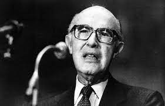
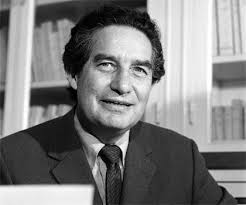

Was a Mexican diplomat and politician who, in conjunction with Sweden's Alva Myrdal, received the Nobel Peace Prize in 1982. García Robles received the peace prize as the driving force behind the Treaty of Tlatelolco, setting up a nuclear-free zone in Latin America and the Caribbean. The agreement was signed in 1967 by most states in the region, though some states took some time to ratify the agreement.
Was a Mexican poet and diplomat. For his body of work, he was awarded the 1977 Jerusalem Prize, the 1981 Miguel de Cervantes Prize, the 1982 Neustadt International Prize for Literature, and the 1990 Nobel Prize in Literature.
Was a Mexican chemist. He played a pivotal role in the discovery of the Antarctic ozone hole and was a co-recipient of the 1995 Nobel Prize in Chemistry for his role in discovering the threat to the Earth's ozone layer from chlorofluorocarbon (CFC) gases. He was the first Mexican-born scientist to receive a Nobel Prize in Chemistry and the third Mexican born person to receive the Nobel award.